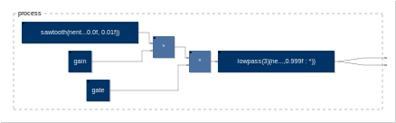

<div class="container-fluid"><div class="row faust-doc"><nav id="TOC" class="col-3 faust-doc-content"><div style="height: 100%;overflow-y: scroll;"><ul class="nav nav-pills flex-column"><ul>
<li><a class="nav-link" href="#faust-tutorials">Faust Tutorials</a></li>
<li><a class="nav-link" href="#tutorial-adding-faust-dsp-support-to-your-juce-plug-ins">Tutorial: Adding Faust DSP Support to Your JUCE Plug-ins</a><ul>
<li><a class="nav-link" href="#the-old-way-brut-force-method">“The Old Way”: Brut-Force Method</a></li>
<li><a class="nav-link" href="#simple-synth-plug-in">Simple Synth Plug-In</a><ul>
<li><a class="nav-link" href="#generating-the-dsp-engine">Generating the DSP Engine</a></li>
<li><a class="nav-link" href="#creating-an-empty-juce-plug-in-project">Creating an Empty JUCE Plug-In Project</a></li>
</ul></li>
<li><a class="nav-link" href="#creating-and-using-a-polyphonic-faust-dsp-object">Creating and Using a Polyphonic Faust DSP Object</a></li>
</ul></li>
</ul>
</div>
</nav>
<main role="main" class="col-9 ml-sm-auto px-4 faust-doc-content">
<div data-spy="scroll" data-target="#TOC" data-offset="100" style="height: 100%;overflow-y: scroll;">
<!-- doc-begin -->
<h1 id="faust-tutorials">Faust Tutorials</h1>
<p>This page gathers various tutorials around the Faust programming language and some of its associated tools. This is an ongoing project and it will soon be populated with more elements.</p>
<p>Should you have any question, feel free to send an e-mail to the <a href="../community/mailing-lists/index.html#users-list">Faust user mailing list</a>.</p>
<h1 id="tutorial-adding-faust-dsp-support-to-your-juce-plug-ins">Tutorial: Adding Faust DSP Support to Your JUCE Plug-ins</h1>
<blockquote>
<p>This tutorial doesn’t belong to the Faust manual. It will eventually live in its own page. It has been placed here for now for convenience and rapid prototyping.</p>
</blockquote>
<p><a href="https:/.com/">JUCE</a> is a well known framework for creating audio plug-ins (i.e., VST, AU, AAX, etc.) and applications for a wide range of platforms. Faust can be used to generate ready-to-use JUCE applications and plug-ins implementing the standard user interface (UI) described in the Faust code using <a href="TODO">faust2juce</a>. However, it is sooo easy to make professional looking UIs from scratch in JUCE that you might want to use Faust to implement the DSP portion of your plug-in and build your own UI.</p>
<p>In this tutorial, we demonstrate how to use <a href="TODO"><code>faust2api</code></a> to generate a JUCE audio engine from Faust and how to interface it with your JUCE plug-in/UI. We’ll cover basic examples as well as more advanced applications involving polyphony, etc.</p>
<h2 id="the-old-way-brut-force-method">“The Old Way”: Brut-Force Method</h2>
<blockquote>
<p>If you’re not interested by this brief page of history, you can jump directly to the <a href="#simple-synth-plug-in">next section</a>.</p>
</blockquote>
<p>Before <code>faust2api</code> existed, it was already possible to use Faust to implement the DSP portion of a JUCE plug-in. Indeed, the most basic way to use Faust is to generate C++ code with the Faust compiler. Running:</p>
<pre><code>faust someCode.dsp -o someCode.cpp</code></pre>
<p>will output a C++ file (<code>someCode.cpp</code>) containing a class implementing a ready-to-use audio callback (see <a href="TODO">this tutorial</a>). Hence, it was just a matter of using this class in your JUCE project, pass it the input buffers, retrieve the output buffers, and change potential parameters, etc. <a href="https://ccrma.stanford.edu/courses/256a-fall-2016/lectures/faust/">This short (and potentially outdated) tutorial</a> from 2016 demonstrates how this can be done.</p>
<p>Fortunately, things are simpler than ever nowadays and <code>faust2api</code> greatly simplifies this process.</p>
<h2 id="simple-synth-plug-in">Simple Synth Plug-In</h2>
<p><a href="misc/SawtoothSynth.zip">&lt;&lt; Download the source of this tutorial &gt;&gt;</a></p>
<p>In this section, we demonstrate how to use a Faust synth to build a plug-in in JUCE with a custom UI from scratch.</p>
<blockquote>
<p>This tutorial only demonstrates how to make a JUCE plug-in. Making a JUCE standalone application following the same method is perfhttp://faust.grame.fr/manual/ectly possible with some adjustments.</p>
</blockquote>
<h3 id="generating-the-dsp-engine">Generating the DSP Engine</h3>
<p>First, let’s implement a basic subtractive synthesizer in Faust based on a filtered sawtooth wave (<a href="misc/filteredSawtooth.dsp"><code>filteredSawtooth.dsp</code></a>):</p>
<div class="faust-run"><a href="img/src/exfaust0/exfaust0-svg/process.svg" target="_blank"></a>
<pre><code>import(&quot;stdfaust.lib&quot;);
freq = nentry(&quot;freq&quot;,50,200,1000,0.01);
gain = nentry(&quot;gain&quot;,0.5,0,1,0.01) : si.smoo;
gate = button(&quot;gate&quot;) : si.smoo;
cutoff = nentry(&quot;cutoff&quot;,10000,50,10000,0.01) : si.smoo;
process = os.sawtooth(freq)*gain*gate : fi.lowpass(3,cutoff) &lt;: _,_;</code></pre>
<a href="https://faust.grame.fr/tools/editor?code=https://faust.grame.fr/manual/img/src/exfaust0/exfaust0.dsp"><button type="button" class="btn btn-primary">Try it Yourself >></button></a></div>
<p>Feel free to run it in the web editor to see how it sounds!</p>
<blockquote>
<p>The output of the lowpass is split into 2 signals to create a stereo object.</p>
</blockquote>
<p>Note that all the parameters are smoothed to prevent clicking (we want our plug-in to be clean!). Even <code>gate</code> is smoothed, which will apply a gentle exponential envelope when the trigger signal is sent, etc.</p>
<p>Since Faust will not build its own UI here, the type of UI element used in this code doesn’t really matter. They just serve as a point of entry to control the parameters of the audio engine we’re about to generate. So <code>nentry</code>, could be replaced by <code>hslider</code> or <code>vslider</code>, it would not make any difference. However, we encourage you to always write “coherent” interfaces in case someone would like to use your Faust code “as such” at some point.</p>
<p>This Faust program can be turned into an audio engine for JUCE simply by running the following command (assuming that Faust is properly installed on your system):</p>
<pre><code>faust2api -juce filterSawtooth.dsp</code></pre>
<p>Alternatively (i.e., if you’re an unfortunate Windows user), you can use the Faust web editor to carry out the same task by choosing <code>source/juce</code> in the export function.</p>
<p>In both cases, you’ll end up with with a zip file containing a C++ file and its companion header file as well as some automatically generated markdown documentation.</p>
<h3 id="creating-an-empty-juce-plug-in-project">Creating an Empty JUCE Plug-In Project</h3>
<p>In this section, we’ll assume that you’re a bit familiar with <a href="https://juce.com/">JUCE</a>. If that’s not your case, don’t panic and just read their <a href="https://docs.juce.com/master/tutorial_new_projucer_project.html">Getting started with the Projucer</a> tutorial. We also recommend you to have a look a the next few following tutorials to have a sense of how things work. They’re nice and easy to read!</p>
<p>In the Projucer, create a new Audio Plug-In, add the targets that you want, in the settings, make sure that “Plugin is a Synth” is enabled. In our case, we named it “SawtoothSynth” (choose this name wisely as it will impact the class names of your program).</p>
<p></p>
<p>Now, place <code>DspFaust.cpp</code> and <code>DspFaust.h</code> generated in the previous step in the <code>Source</code> folder of your JUCE plug-in project. Then select these 2 files in <code>Source</code> and drag them in the Projucer so that they become visible in the <code>Source</code> tab:</p>
<p></p>
<p>At this point, try to compile your plug-in and see if it runs. Remember that JUCE now generates a “standalone plug-in” by default which is super convenient to test things without having to open the plug-in in a third party application.</p>
<p>Let’s now add our DspFaust object to the <code>PluginProcessor</code>. In <code>PluginProcessor.h</code>, include <code>DspFaust.h</code>:</p>
<pre><code>#include &quot;../JuceLibraryCode/JuceHeader.h&quot;
#include &quot;DspFaust.h&quot;</code></pre>
<p>and implement <code>DspFaust</code> in the private section of the <code>AudioProcessor</code> class:</p>
<pre><code>private:
    DspFaust dspFaust;
    
    //==============================================================================
    JUCE_DECLARE_NON_COPYABLE_WITH_LEAK_DETECTOR (SawtoothSynthAudioProcessor)</code></pre>
<p>In <code>PluginProcessor.cpp</code>, all we have to do is to call <code>dspFaust.start()</code> when we want to start the Faust audio engine and <code>dspFaust.stop()</code> when we want to stop it. No need to set the sampling rate or the buffer length, <code>dspFaust</code> takes care of that for ya.</p>
<blockquote>
<p>Remember that the package generated by <code>faust2api</code> contains a documentation of the generated API. Feel free to have a look at it to get a sense of what methods are available.</p>
</blockquote>
<p><code>dspFaust.start()</code> and <code>dspFaust.stop()</code> can be conveniently placed in the constructor and destructor (respectively) of <code>SawtoothSynthAudioProcessor</code>:</p>
<pre><code>SawtoothSynthAudioProcessor::SawtoothSynthAudioProcessor()
#ifndef JucePlugin_PreferredChannelConfigurations
     : AudioProcessor (BusesProperties()
                     #if ! JucePlugin_IsMidiEffect
                      #if ! JucePlugin_IsSynth
                       .withInput  (&quot;Input&quot;,  AudioChannelSet::stereo(), true)
                      #endif
                       .withOutput (&quot;Output&quot;, AudioChannelSet::stereo(), true)
                     #endif
                       )
#endif
{
  dspFaust.start();
}

SawtoothSynthAudioProcessor::~SawtoothSynthAudioProcessor()
{
  dspFaust.stop();
}</code></pre>
<p>The default JUCE plug-in copies the input buffer in the output buffer. Therefore, make sure that the implementation of the <code>processBlock</code> method looks like:</p>
<pre><code>void SawtoothSynthAudioProcessor::processBlock (AudioBuffer&lt;float&gt;&amp; buffer, MidiBuffer&amp; midiMessages)
{
}</code></pre>
<p>(empty).</p>
<p>We now want to control the parameters of our <code>dspFaust</code> object. For that, the <code>setParamValue</code> method can be used. Since we want to control the parameters of our synth from the <code>PluginEditor</code>, we create a series of public methods in <code>PluginProcessor</code> to control each parameter of our synth. In <code>PluginProcessor.h</code> this will look like:</p>
<pre><code>public:
  void setFreq(float freq);
  void setGain(float gain);
  void setCutoff(float cutoff);
  void setGate(bool gate);</code></pre>
<p>and the corresponding implementation in <code>PluginProcessor.cpp</code> will be:</p>
<pre><code>void SawtoothSynthAudioProcessor::setFreq(float freq)
{
  dspFaust.setParamValue(&quot;/synth/freq&quot;,freq);
}

void SawtoothSynthAudioProcessor::setGain(float gain)
{
  dspFaust.setParamValue(&quot;/synth/gain&quot;,gain);
}

void SawtoothSynthAudioProcessor::setGate(bool gate)
{
  if(gate){
    dspFaust.setParamValue(&quot;/synth/gate&quot;,1);
  }
  else{
    dspFaust.setParamValue(&quot;/synth/gate&quot;,0);
  }
}

void SawtoothSynthAudioProcessor::setCutoff(float cutoff)
{
  dspFaust.setParamValue(&quot;/synth/cutoff&quot;,cutoff);
}</code></pre>
<p>Hence, <code>setParamValue</code> has 2 arguments: the path of the parameter in the Faust code, and its value. Note that a list of all the available parameters of the Faust object of their corresponding path can be found in the markdown documentation of the package generated with <code>faust2api</code>.</p>
<p>That’s it for the <code>PluginProcessor</code>! Easy isn’t it ;)? Now, let’s add a basic interface to control this synth.</p>
<p>We add a series of sliders, button, and labels to the private section of <code>SawtoothSynthAudioProcessorEditor</code> in <code>PluginEditor.h</code>:</p>
<pre><code>private:
  Slider frequencySlider;
  Slider gainSlider;
  Slider cutoffSlider;
  ToggleButton onOffButton;
    
  Label frequencyLabel;
  Label gainLabel;
  Label cutoffLabel;
  Label onOffLabel;</code></pre>
<p>and their corresponding implementation in <code>PluginEditor.cpp</code>:</p>
<pre><code>SawtoothSynthAudioProcessorEditor::SawtoothSynthAudioProcessorEditor (SawtoothSynthAudioProcessor&amp; p)
    : AudioProcessorEditor (&amp;p), processor (p)
{
  setSize (800, 130);
  
  addAndMakeVisible (frequencySlider);
  frequencySlider.setRange (50.0, 5000.0);
  frequencySlider.setSkewFactorFromMidPoint (500.0);
  frequencySlider.setValue(300);
  frequencySlider.onValueChange = [this] {
    processor.setFreq(frequencySlider.getValue());  
  };

  addAndMakeVisible(frequencyLabel);
  frequencyLabel.setText (&quot;Frequency&quot;, dontSendNotification);
  frequencyLabel.attachToComponent (&amp;frequencySlider, true);
    
  addAndMakeVisible (gainSlider);
  gainSlider.setRange (0.0, 1.0);
  gainSlider.setValue(0.5);
  gainSlider.onValueChange = [this] { 
    processor.setGain(gainSlider.getValue()); 
  };
    
  addAndMakeVisible(gainLabel);
  gainLabel.setText (&quot;Gain&quot;, dontSendNotification);
  gainLabel.attachToComponent (&amp;gainSlider, true);
    
  addAndMakeVisible (cutoffSlider);
  cutoffSlider.setRange (50.0, 10000.0);
  cutoffSlider.setValue(5000.0);
  cutoffSlider.onValueChange = [this] { 
    processor.setCutoff(cutoffSlider.getValue()); 
  };
    
  addAndMakeVisible(cutoffLabel);
  cutoffLabel.setText (&quot;Cutoff&quot;, dontSendNotification);
  cutoffLabel.attachToComponent (&amp;cutoffSlider, true);
  
  addAndMakeVisible(onOffButton);
  onOffButton.onClick = [this] { 
    processor.setGate(onOffButton.getToggleState());
  };
    
  addAndMakeVisible(onOffLabel);
  onOffLabel.setText (&quot;On/Off&quot;, dontSendNotification);
  onOffLabel.attachToComponent (&amp;onOffButton, true);
}</code></pre>
<p>The methods that we declared in the previous step are basically called to set the value of the parameters of our DSP engine thanks to the <code>processor</code> object.</p>
<p>The <code>resized</code> method must be implemented so that the various UI elements that we created actually have a size:</p>
<pre><code>void SawtoothSynthAudioProcessorEditor::resized()
{
  const int sliderLeft = 80;
  frequencySlider.setBounds (sliderLeft, 10, getWidth() - sliderLeft - 20, 20);
  gainSlider.setBounds (sliderLeft, 40, getWidth() - sliderLeft - 20, 20);
  cutoffSlider.setBounds (sliderLeft, 70, getWidth() - sliderLeft - 20, 20);
  onOffButton.setBounds (sliderLeft, 100, getWidth() - sliderLeft - 20, 20);
}</code></pre>
<p>Finally, make sure that you clean the implementation of the <code>paint</code> method to get rid of the default ugly “Hello World”:</p>
<pre><code>void SawtoothSynthAudioProcessorEditor::paint (Graphics&amp; g)
{
  g.fillAll (getLookAndFeel().findColour (ResizableWindow::backgroundColourId));
}</code></pre>
<p>Note that the same approach can be used to create an audio effect: <code>DspFaust</code> will take care of instantiating the input buffers, etc. so it should just work right away as for this synth example.</p>
<p>Compile your plug-in and run it, it should look like this:</p>
<p></p>
<p>The goal of this section was just to show you how to integrate a Faust DSP engine into a JUCE plug-in project and how to control it with a simple UI. Once again, JUCE is a powerful tool to implement sophisticated UI in a very simple way. You’ll find all the documentation you need on <a href="https://juce.com/">their website</a> to start making beautiful plug-ins!</p>
<h2 id="creating-and-using-a-polyphonic-faust-dsp-object">Creating and Using a Polyphonic Faust DSP Object</h2>
<p><a href="misc/SawtoothSynthPoly.zip">&lt;&lt; Download the source of this tutorial &gt;&gt;</a></p>
<p>In the second part of this tutorial, we demonstrate how to generate a polyphonic DSP engine with <code>faust2api</code> and how to control it with the “standard” JUCE keyboard.</p>
<p>The following code is almost the same as the one used in the previous section, except that <a href="TODO">we declared a global effect using the <code>effect</code> standard variable</a> (<a href="TODO"><code>filteredSawtoothPoly.dsp</code></a>):</p>
<div class="faust-run"><a href="img/src/exfaust1/exfaust1-svg/process.svg" target="_blank"></a>
<pre><code>import(&quot;stdfaust.lib&quot;);
freq = nentry(&quot;freq&quot;,50,200,1000,0.01) : si.smoo;
gain = nentry(&quot;gain&quot;,0.5,0,1,0.01) : si.smoo;
gate = button(&quot;gate&quot;) : si.smoo;
cutoff = nentry(&quot;cutoff&quot;,10000,50,10000,0.01) : si.smoo;
process = os.sawtooth(freq)*gain*gate : fi.lowpass(3,cutoff) &lt;: _,_ ;
effect = dm.zita_light;</code></pre>
<a href="https://faust.grame.fr/tools/editor?code=https://faust.grame.fr/manual/img/src/exfaust1/exfaust1.dsp"><button type="button" class="btn btn-primary">Try it Yourself >></button></a></div>
<p>Note that the <code>freq</code>, <code>gain</code>, and <code>gate</code> parameters are declared, which means that this Faust program can be turned into a polyphonic synth (see the <a href="TODO">MIDI polyphonic documentation</a>). Hence, in the current configuration multiple instances (voices) of <code>process</code> will be created and connected to a single instance of <code>effect</code>.</p>
<p>A polyphonic DSP engine for JUCE can be generated from this code by running:</p>
<pre><code>faust2api -juce -nvoices 12 filteredSawtoothPoly.dsp</code></pre>
<p>where 12 is the maximum number of polyphonic voices (which can be changed from the generated C++ code as well by changing the value of the <code>NVOICES</code> macro at the beginning of <code>DspFaust.cpp</code>). The same result can be achieved using the <a href="https://faust.grame.fr/editor">Faust web editor</a> and by choosing <code>source/juce-poly</code> in the export function.</p>
<p>Create a new JUCE audio plug-in project with the same configuration than in the previous section. Import the <code>DspFaust</code> files, create an instance of the <code>DspFaust</code> object and call the <code>dspFaust.start()</code> and <code>dspFaust.stop()</code> methods as we did before.</p>
<p>Our goal is to create a simple plug-in with the following interface:</p>
<p></p>
<p>where the keyboard can be used to play several notes at the same time and the “cutoff” slider can be used to change the cutoff frequency of the lowpass filter of all active voices. This is an extremely primitive implementation where only the messages from the UI keyboard are processed: we’re just doing this for the sake of the example. If you’ve never worked with keyboards and MIDI in JUCE, we strongly recommend you to read <a href="https://docs.juce.com/master/tutorial_handling_midi_events.html">this tutorial</a>.</p>
<p>In <code>PluginEditor.h</code>, let’s first add the following inheritance to the <code>SawtoothSynthAudioProcessorEditor</code> class:</p>
<pre><code>class SawtoothSynthAudioProcessorEditor  : 
  public AudioProcessorEditor, 
  private MidiInputCallback, 
  private MidiKeyboardStateListener
{</code></pre>
<p>This is necessary to implement the MIDI callback and the keyboard (UI) listener. This inheritance requires us to implement the following methods in the private section of <code>PluginEditor.h</code>. We also add an instance of a UI keyboard and its associated state as well as a slider and its label to control the cutoff frequency of the lowpass:</p>
<pre><code>private:
  void handleNoteOn (MidiKeyboardState*, int midiChannel, int midiNoteNumber, float velocity) override;
  void handleNoteOff (MidiKeyboardState*, int midiChannel, int midiNoteNumber, float /*velocity*/) override;
  void handleIncomingMidiMessage (MidiInput* source, const MidiMessage&amp; message) override;
  
  MidiKeyboardState keyboardState;   
  MidiKeyboardComponent keyboardComponent; 
    
  Slider cutoffSlider;
  Label cutoffLabel;</code></pre>
<p>In <code>PluginEditor.cpp</code>, we can add the keyboard and the slider to the constructor:</p>
<pre><code>SawtoothSynthAudioProcessorEditor::SawtoothSynthAudioProcessorEditor (SawtoothSynthAudioProcessor&amp; p)
  : AudioProcessorEditor (&amp;p), processor (p), keyboardComponent (keyboardState, MidiKeyboardComponent::horizontalKeyboard)
{
  setSize (800, 150);
    
  addAndMakeVisible (keyboardComponent);
  keyboardState.addListener (this);
    
  addAndMakeVisible (cutoffSlider);
  cutoffSlider.setRange (50.0, 10000.0);
  cutoffSlider.setValue(5000.0);
  cutoffSlider.onValueChange = [this] { 
    processor.setCutoff(cutoffSlider.getValue()); 
  };
    
  addAndMakeVisible(cutoffLabel);
  cutoffLabel.setText (&quot;Cutoff&quot;, dontSendNotification);
  cutoffLabel.attachToComponent (&amp;cutoffSlider, true);
}</code></pre>
<p>and we must de-allocate the keyboard state listener in the destructor:</p>
<pre><code>SawtoothSynthAudioProcessorEditor::~SawtoothSynthAudioProcessorEditor()
{
  keyboardState.removeListener(this);
}</code></pre>
<p>The implementation of the <code>setCutoff</code> method is detailed later in this tutorial and is very similar to the one described in the previous section.</p>
<p>We also need to define the size of the various elements in the interface (as we did before):</p>
<pre><code>void SawtoothSynthAudioProcessorEditor::resized()
{
  const int sliderLeft = 80;
  keyboardComponent.setBounds (10,10,getWidth()-30,100);
  cutoffSlider.setBounds (sliderLeft, 120, getWidth() - sliderLeft - 20, 20);
}</code></pre>
<p>MIDI messages are retrieved from the keyboard simply by implementing the following inherited methods:</p>
<pre><code>void SawtoothSynthAudioProcessorEditor::handleIncomingMidiMessage (MidiInput* source, const MidiMessage&amp; message) {}

void SawtoothSynthAudioProcessorEditor::handleNoteOn (MidiKeyboardState*, int midiChannel, int midiNoteNumber, float velocity)
{
  processor.keyOn(midiNoteNumber,int(127*velocity));
}

void SawtoothSynthAudioProcessorEditor::handleNoteOff (MidiKeyboardState*, int midiChannel, int midiNoteNumber, float /*velocity*/)
{
  processor.keyOff(midiNoteNumber);
}</code></pre>
<p>The implementation of the <code>keyOn</code> and <code>keyOff</code> methods is detailed below.</p>
<p>On the <code>PluginProcessor</code> side, the following methods must be declared in <code>PluginProcessor.h</code>:</p>
<pre><code>void keyOn(int pitch, int  velocity);
void keyOff(int pitch);
void setCutoff(float cutoff);</code></pre>
<p>They are the ones that were used in the previous steps.</p>
<p>Their corresponding implementation in <code>PluginProcessor.cpp</code> is very straight forward:</p>
<pre><code>void SawtoothSynthAudioProcessor::keyOn(int pitch, int velocity)
{
  dspFaust.keyOn(pitch,velocity);
}

void SawtoothSynthAudioProcessor::keyOff(int pitch)
{
  dspFaust.keyOff(pitch);
}

void SawtoothSynthAudioProcessor::setCutoff(float cutoff)
{
  dspFaust.setParamValue(&quot;/Sequencer/DSP1/Polyphonic/Voices/synth/cutoff&quot;,cutoff);
}</code></pre>
<p><code>keyOn</code> and <code>keyOff</code> are methods from <code>DspFaust</code> that can be used to trigger and stop a note. <code>keyOn</code> will allocate a new voice, convert its <code>pitch</code> parameter into a frequency that will be sent automatically to the Faust <code>freq</code> parameter, <code>velocity</code> is converted to a level that will be sent to the <code>gain</code> parameter, and the <code>gate</code> parameter is set to 1. Inversely, <code>keyOff</code> sets <code>gate</code> to 0 and waits for t60 to be reached to de-allocate the current voice.</p>
<p><code>keyOn</code> returns a voice ID whose type is <code>unsigned long</code>. This ID can then be used to change the parameter of a specific voice. We’re not using this functionality in the example presented in this tutorial but here is how this would work:</p>
<pre><code>unsigned long voiceID = dspFaust.keyOn(60,110);
dspFaust.setVoiceParamValue(&quot;/synth/cutoff&quot;,voiceID,378);</code></pre>
<p>Note that voices can also be allocated directly without using <code>keyOn</code> and <code>keyOff</code> with the <code>newVoice</code> and the <code>deleteVoice</code> methods:</p>
<pre><code>unsigned long voiceID = dspFaust.newVoice();
dspFaust.setVoiceParamValue(&quot;/synth/gate&quot;,voiceID,1);
// do something...
dspFaust.deleteVoice(voiceID);</code></pre>
<p>Using <code>setParamValue</code> as we’re doing in the current example, we can set the value of a parameter for all the voices of the DSP engine. Unlike <code>setVoiceParamValue</code>, the parameter path must be the complete path provided in the README of the DSP package generated with <code>faust2api</code>. So once again, for <code>setVoiceParamValue</code>, the short path is enough but for <code>setParamValue</code>, the complete path is needed.</p>
<p>You might wonder why the path is much more complex with a polyphonic DSP engine than with a regular one. <code>Sequencer</code> is the full object (poly synth + effect), <code>DSP1</code> is the synth (<code>DSP2</code> is the effect), <code>Polyphonic</code> is the polyphonic layer of the object, and finally <code>Voices</code> addresses all the voices at once.</p>
<p>That’s it folks! Try to compile and run your plug-in, it should just work. Of course, things could be significantly improved here but at this point, you should be able to sail on your own.</p></div></div></div></main>
